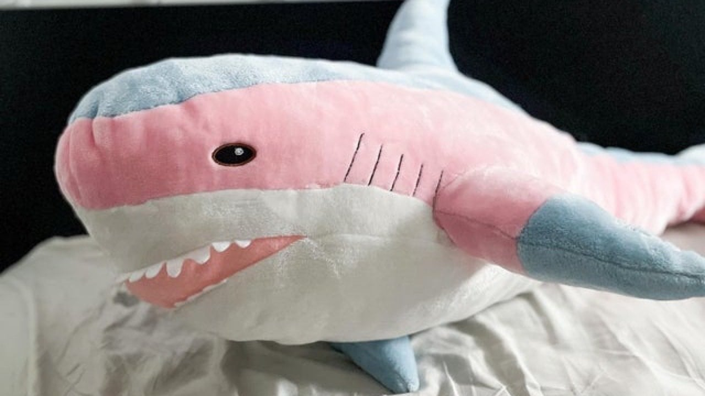

Často opakované lži o Blåhajovi
Mýtus č. 1: Blåhaj hryzie deti v spánku
Zúbky Blåhaja sú primäkké na to, aby nimi hrýzol hocikoho. Navyše je Blåhaj vegetarián.
Mýtus č. 2: Pes je najlepší priateľ človeka
Tento známy „fakt” je v skutočnosti ničím nepodložené tvrdenie. Experti nedávno zistili, že Blåhaj je človeku oveľa lepším priateľom, keďže nevyžaduje toľko starostlivosti. Psy sú jednoducho na človeku až nezdravo závislé a to nie je zdravé.
Mýtus č. 3:
Mýtus č. :

Raritný farebný Blåhaj. Zdroj: change.org